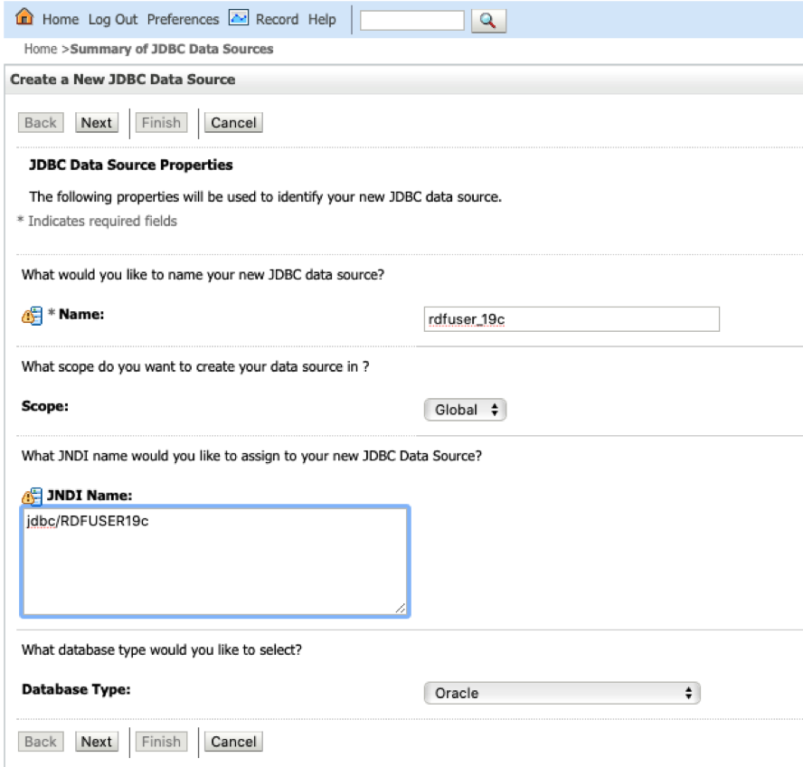
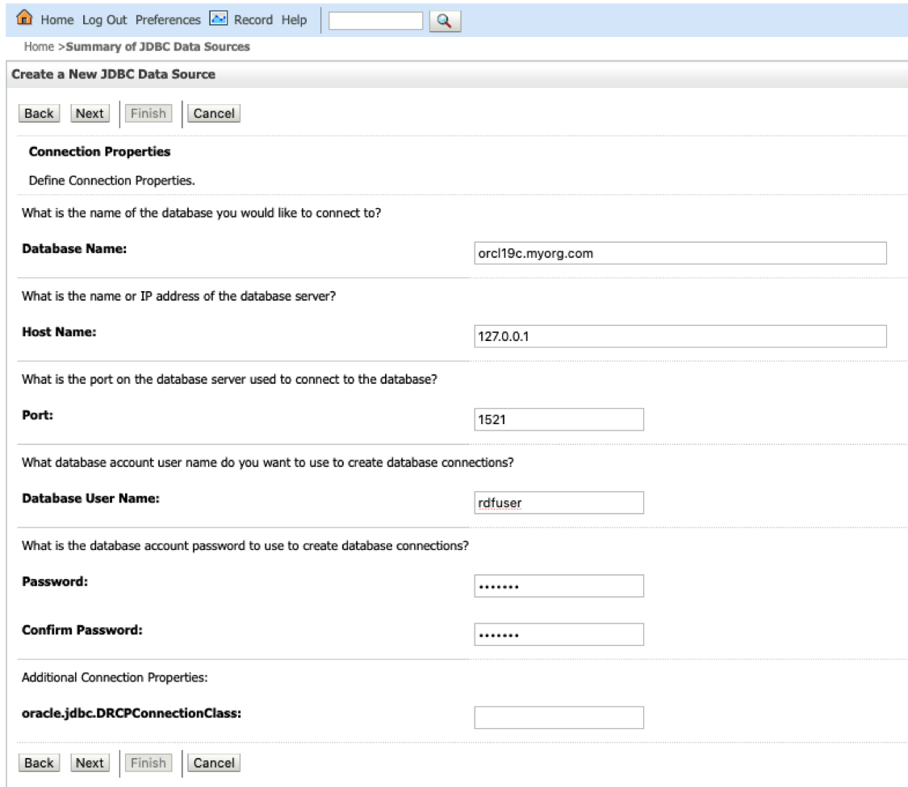
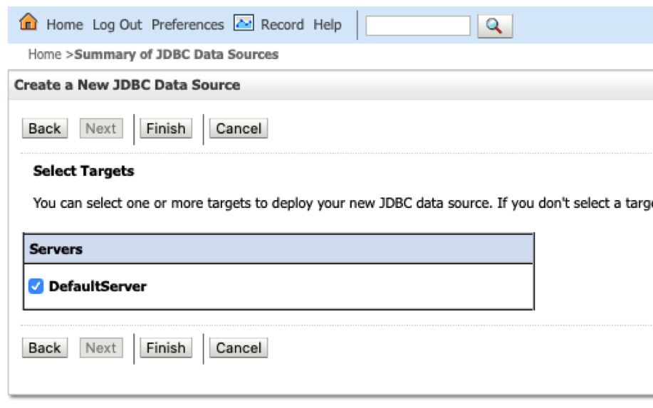

14.3.1.2.1 Creating a JDBC Data Source in WebLogic Server
To create a JDBC data source in WebLogic Server:
-
Log in to the WebLogic administration console as an administrator:
http://localhost:7101/console. -
Click Services, then JDBC Data sources.
-
Click New and select the Generic data source menu option to create a JDBC data source.
-
Enter the JDBC data source information (name and JNDI name), then click Next.
Figure 14-15 JDBC Data Source and JNDI

Description of "Figure 14-15 JDBC Data Source and JNDI" -
Accept the defaults on the next two pages.
-
Enter the database connection information: service name, host, port, and user credentials.
Figure 14-16 Create JDBC Data Source

Description of "Figure 14-16 Create JDBC Data Source" -
Click Next to continue.
-
Click the Test Configuration button to validate the connection and click Next to continue.
-
Select the server target and click Finish.
Figure 14-18 Create JDBC Data Source

Description of "Figure 14-18 Create JDBC Data Source"
The JDBC data gets added to the data source table and the JNDI name is added to the combo box list in the create container dialog.
Parent topic: Creating an Oracle Container Data Source